PROJECT
2020 프로젝트 스튜디오 그 첫번째로 발달장애인을 위한 특성화된 성교육 애플리케이션 서비스를 주제로 하여 팀을 이뤄 기획, 디자인, 웹구현 단계까지 진행하였습니다. 하단에서 행성의 랜딩페이지를 확인하실 수 있습니다!
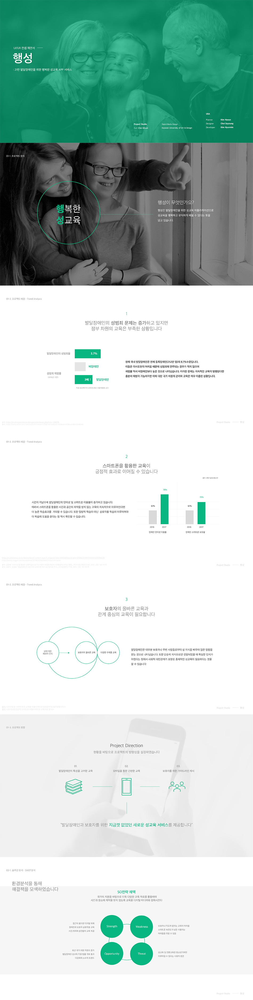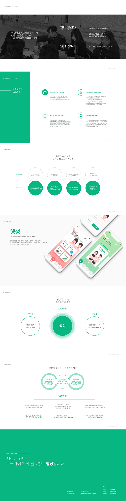SM엔터테인먼트에서 OTT서비스를 어떨까? 하는 막연한 상상에서 시작된 프로젝트입니다. 하나부터 열까지 신경쓰지 않은 부분이 없는 자식같은 프로젝트입니다. 작년 겨울 기획과 디자인을 하였고, 올해 웹구현까지 진행했습니다. 하단에서 SMIVEW의 랜딩페이지를 확인할 수 있습니다!
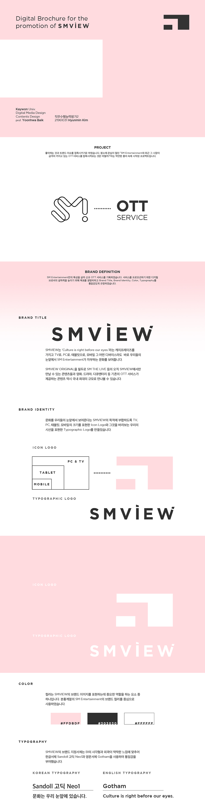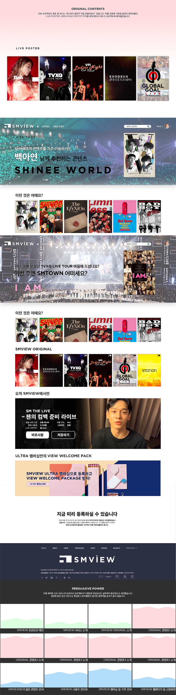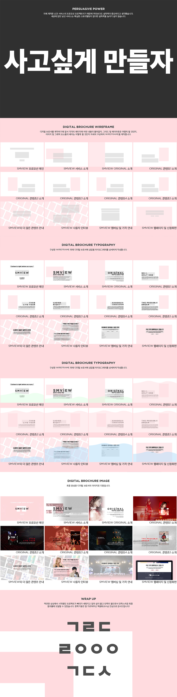좋아하는 영화 중 하나인 스타이즈본의 프로모션 페이지를 만드는 프로젝트입니다. 웹페이지를 직접 기획하고 디자인한 후 JavaScript를 활용한 웹구현을 진행했습니다. 하단에서 A Star is Born 프로모션 페이지를 확인할 수 있습니다!
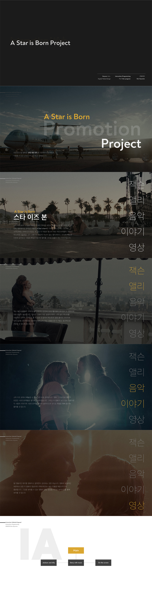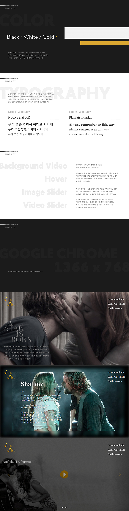일러스트레이터로 여권과 여권의 사증란을 리디자인 하였습니다. 특별한 요소를 부여하기 위해 여권을 사용할 수 있는 국가를 "월드컵 우승국가" 들로 한정지었고 그 덕분에 특별한 여권이 탄생할 수 있었습니다. 작년 한 해 가장 많은 시간을 할애하여 지금까지도 기억에 남는 프로젝트입니다.
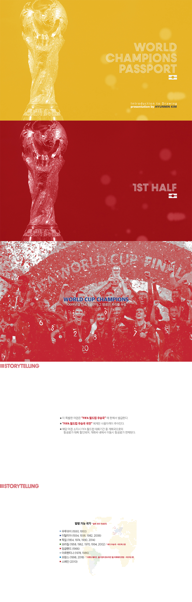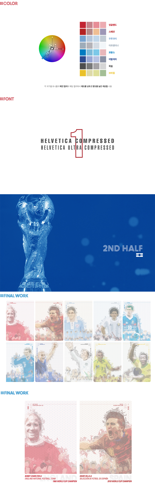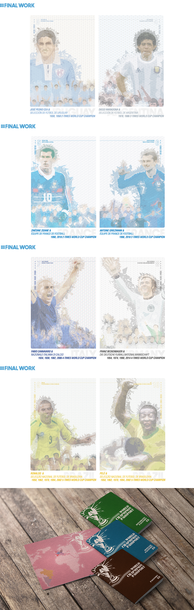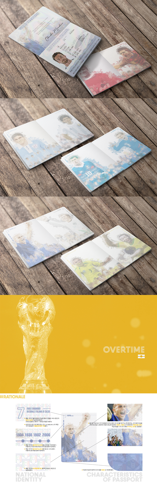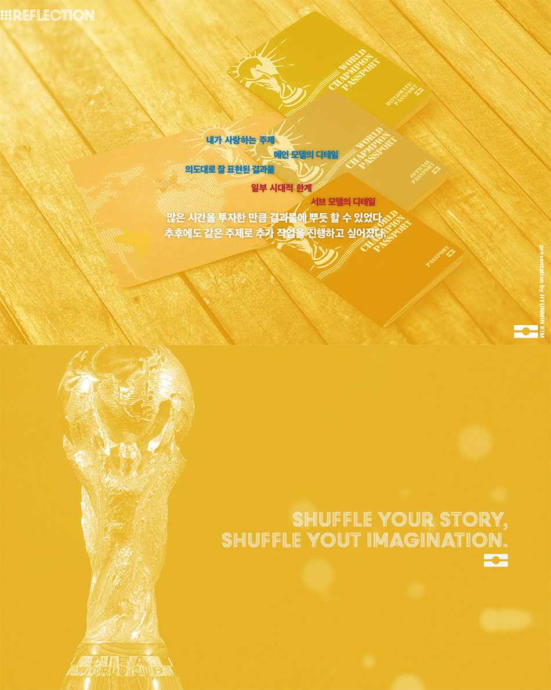대한민국 축구국가대표팀의 공식 스토어인 KFA Store의 웹사이트 리뉴얼을 기획했습니다. 국가대표팀에 대한 높은 관심도에 비해 사용자가 현저하게 적게 나타난 KFA Store의 사용자를 증가시키기 위한 목적으로 진행한 리뉴얼 프로젝트입니다. 와이어프레임과 스토리보드를 제작하는것으로 마무리한 프로젝트입니다.
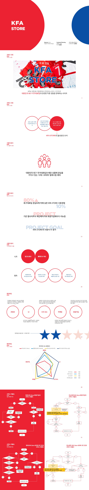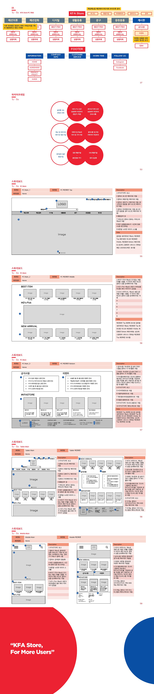